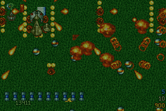

真正的失效不只一種
GBA 全畫面最多提交 128 個 OBJ，同一掃描線還有更小的像素預算； Tyrian 的多部件 Boss、玩家與敵方彈幕、Sidekick、獎賞及爆炸可能同時 超過兩者。更隱蔽的是 OBJ VRAM 快取：敵人仍存在、仍可碰撞，卻可能 因低優先動畫先占滿圖形格而成為透明物件。
物件身分不能靠座標或圖號猜
玩家、玩家子彈、敵方子彈與效果分屬固定 owning pool，可直接取得確定 類別。Boss components 與一般敵人共用 enemy pool，則由 build 工具掃描 四章全部 LVL 的 Event 79、link alias、spawn cohort 與 group-control event，產生通用 Boss identity manifest。
Runtime 在 spawn 當下以 (slot, generation) 綁定身分；零件在
登場動畫中分離或移動，仍是同一個 Boss。slot 釋放後 generation 改變，
新敵人不會繼承舊身分。這也讓血條尚未出現的前置登場階段就能取得
Boss 優先權，而不必為個別關卡寫死 link 清單。
一張候選快照，貫穿三個決策
每個 presentation frame 只建立一次候選目錄，預先保存 screen coordinate、 可見性、OAM 成本、draw stage 與 owning class。需求計數、圖形快取預鎖、 OAM admission 與最後 render 都讀同一份 snapshot，不會在四次 pool 掃描間 得到彼此矛盾的分類。
- Gameplay first. 玩家、Boss 結構、一般敵人及主要敵我子彈先取得 OAM 與 cache。
- Cosmetic remainder. 爆炸、短命效果與陰影只使用剩餘額度。
- Fair rotation. 超額候選從上次停止位置續跑，不讓固定低索引永遠顯示、其他物件永遠消失。
- Atomic upload. Pending upload 帶 ownership generation；資源被重用後，舊 DMA 工作不能覆寫新 tile。
超過硬體上限時，退化也要可預期
最壞壓力研究曾量到同一場景提出 223 個 OAM 需求。排程仍只提交硬體允許 的 128 個：敵人淘汰為 0、敵人快取預鎖失敗為 0，低優先爆炸承擔主要 裁切；若連結構物本身都超量，結構物 admission 也會跨 presentation frame 輪替。更新、碰撞、傷害與原始 pool 順序完全不變。
候選快照、合併 prime、飽和需求計數、稀疏／密集混合掃描與無 modulo 的兩段輪替，讓同一壓力測試 render cycles 再下降 3.86%，完成一張畫面的 平均成本下降 6.01%。這類分支繁多、資料導向的排程保留在最佳化 C； 實測 ARM 化 bit-scan 反而較慢，沒有為「用了組語」犧牲 IWRAM。
Cache ownership 是同一套規則的另一半
Boss compact cache 將 32×32 Sprite2 從 1 KiB 8bpp 格轉成 512-byte 4bpp 畫布，並以關卡 palette 訓練兩組可見色，讓大型 Boss 的 40 個以上部件 可同時存在。一般 L1/L2、projectile cache、split Sidekick 與 compact cache 都驗證 generation 及 layout；例如 fragmented 32×32 Sidekick 必須 以兩個 32×16 OBJ 拼接，不能把相鄰 cache 的 tile 當成下半部。

最終原則
128 OAM 是硬限制，但「哪個物件先消失」是軟體設計。當分類來自資料 ownership、Boss 身分在 build 與 runtime 都可驗證、OAM 與 cache 共用 admission snapshot，超載就能退化成可控的低優先閃爍，而不是偶發的 透明敵人、Boss 缺件或玩家武器被錯圖污染。